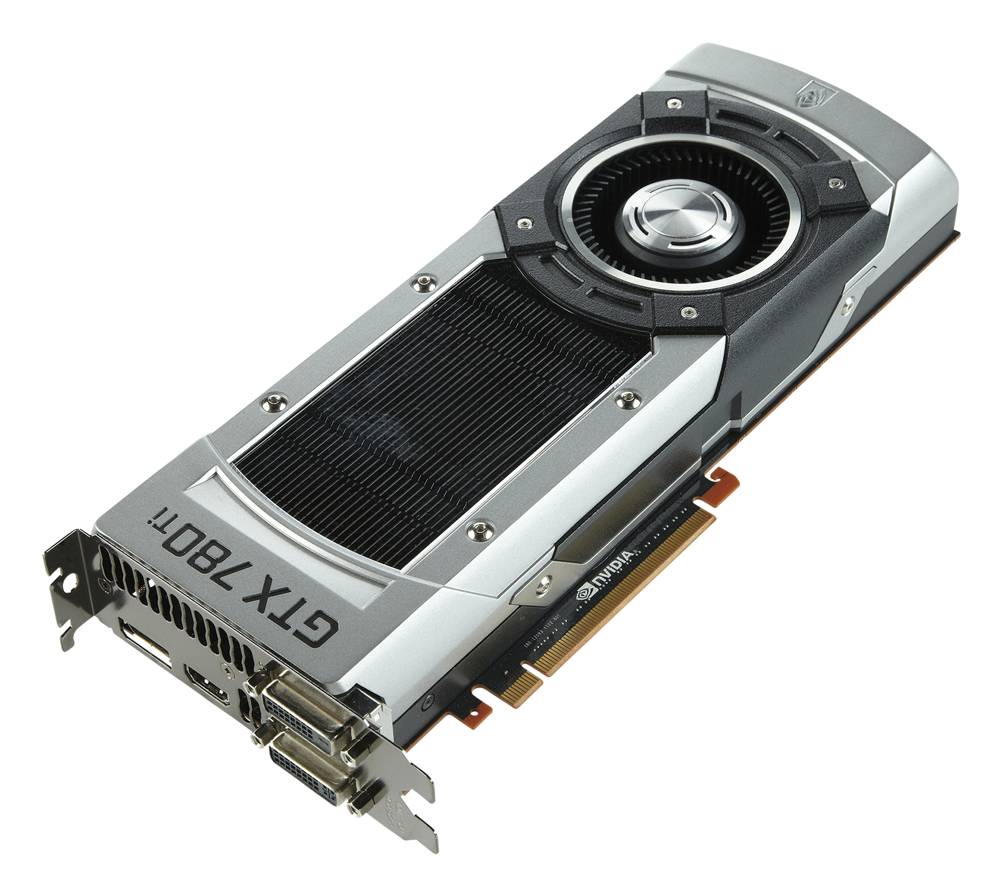
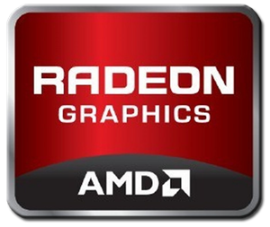
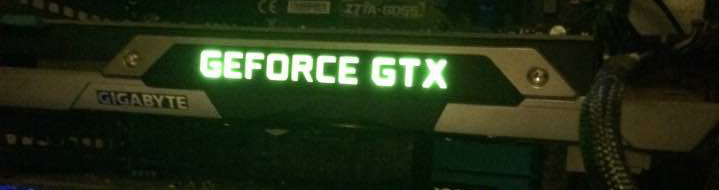
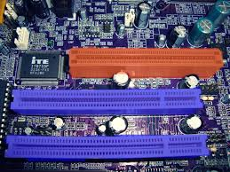
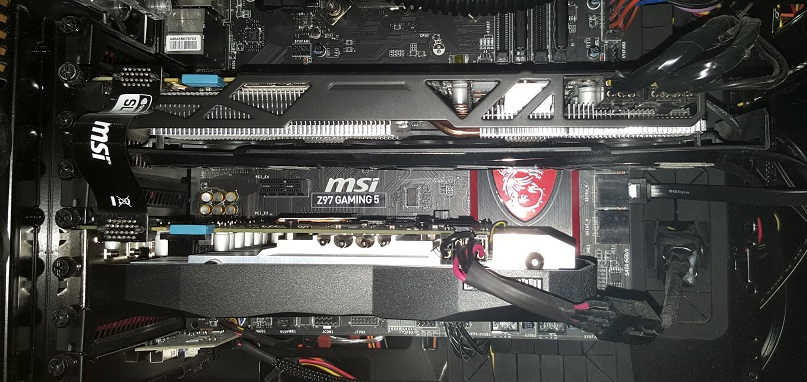

GPU - Graphics card
Introduction
Today we are going to take a look at the eyes of the computer, this is the graphics card. The GPU is not really the graphics card, the GPU is the processor inside the graphics card. This component can come in various sizes as well, it depends on how many fans and stuff the manufacturer decided to put on it. The two major manufacturers Nvidia and AMD have their two cards, Nvidia have their Geforce cards and AMD have their Radeon cards. The graphic cards have some specifications to look at as well for example the memory, how big is it? The more memory the better since the memory decides how many textures your screen can store inside of that it. I might have played with your mind a little but the conclusion is that if you have more memory on your graphics card that means you can have more textures on the screen. You can also watch how fast the graphics card is, it is good if the graphics card is fast so it can get access to the memory fast. You can also use a technology called either SLI or Crossfire. SLI or Crossfire is when you use two graphic cards and connect them together so they work together to either take one frame at a time or take half the screen each. It is called SLI when you are using two Nvidia cards and Crossfire when you use two AMD graphic cards.
Geek facts
There are many different types of graphics cards, old or new in different models. Two major manufacturers, Nvidia and AMD have their cards, the Geforce cards from Nvidia and the Radeon cards from AMD. The processor manufacturer Intel has also integrated graphic chips into their processors so they can show a picture without a graphics card. The various graphic chips can be different in one way or another, and they can be more or less efficient. It is not easy to compare two different graphic cards that are two different models since there are so many things that matters in the graphics card. They can be good at different things like gaming or programming for example. There are also many different specifications on the graphics card that matters like, VRAM, PCI Express x16, GDDR(Graphics Double Data Rate) and now we use GGDR5 which is the latest technology, the memory bandwidth and last but not least, how fast the graphics card is. So there is more than one thing that you need to look at when you compare two circuits with each other. So the best thing you could do is benchmark two graphics card and then compare them.
The GPU - What does the letters tell us?
The main component in the graphics card is the GPU, or the graphics processor. It is just like a casual processor that you put on the motherboard, it has different speeds and amount of cores. Just like in the CPUs the architecture is very important. Just an example of how important it is, an old GPU with high speed and many cores is usually worse than a newer GPU with great architecture and less cores and speed. Nvidia give names to their GPUs, depending on which architecture they are built on. They give names after famous physicist. One example is the Geforce GTX 760 whose GPU is called GK104, the letter K stands for Kepler. In the Geforce GTX 960(GM206) the letter M stands for Maxwell, this makes it easy to recognize which generation the GPU is from. Nvidia does not use the GPU name in the marketing for their cards. They do just like the big brand Intel does with their processors. For example, Intels latest generation is called i7 and not Skylake in the marketing. Nvidia use 3 numbers to show which generation the graphics card is from and the numbers also tell the performance. For example, in the 970 card the 9 tells us which generation it is from and 70 the performance. It is in the same generation as 960, from the 900 series but the 970 has better performance than the 960. You can only compare two cards by the two last numbers if they are from the same generation. Just because a card is from an older generation it does not mean that it is bad. For example the 780 has better performance than the 960 even though the 960 is a much newer card. So if you are about to buy a 960 for 200£ instead of a 780 for 190£ just because the 960 is newer, think again. 780 performs better but might take more energy and spread more heat but if you want to play games with high graphics it might be worth it.
The architectures of Nvidia
Name system
The first letters in the GPU name tells us which performance level the card is on. The most powerful GPU is the one with the three letters GTX in the beginning and then we have GT,GTS and G which are some cards with lower performance. So if you are looking into a GPU from AMD we will now learn and compare these two manufactures and how the naming system works for AMD. So if we just look into one of their GPUs we see a difference directly. An example is the GPU called Radeon R7 370. The first number after the first letter tells us which performance level the card is on. Then the number 3 in 370 tells us which generation the card is from and 70 tells us about the performance order. So the performance level from Nvidia is G, GT, GTS and GTX. From AMD it is displayed on the first number for example R5, R7 and R9, R9 is best. So the last numbers from both manufacturers shows the generation and performance order. So the 280 is less powerful than the 290 but the 380 is from the next generation. If we watch Nvidia we will see that the 970 is on a higher performance level than the 960, and the 960 has worse performance than the 780 which is from an elder generation.
The different brands
Both the CPU and the GPU has two big manufactures but there is one difference, the CPU is directly sold to the customers and not the GPU. The GPU is sold to the graphics card manufacturers that is the reason why you can find so many different brands when you look online, for example Asus, Gigabyte, MSi and so on. That is the reason there are so many different cards with higher or lower memory, some manufacturers want to make cards that is less expensive. When they sell the graphic cards they have the memory in focus and want to show the customers how much memory their card has. Something that is important as well is the clock speed, if you have high memory with slow clock speed the card cannot use the memory in an efficient way. The most common memory size in the graphic cards today is 2GB, though it is getting a bit old so now we see that the cards usually have 4GB or higher, but you only need 4GB if you are playing games that has good graphics. What memory is used for is to save information about the textures, the more textures, the more memory is getting used. That is the reason why it is good with high memory. An example for you that does not understand is that now you should imagine you have two cameras. One of them is good and one of them takes very blurry pictures. The camera with good quality has more textures and since it has more textures the image takes more memory on your camera. If you take with the bad camera the image will not use as much memory as the good one, it works in the same way as the graphics on a game.

Asus logo
Gigabyte logo
MSi logo
Internal connections
So next up is the internal connections. PCI and PCI-express that we use today since the PCI was not powerful enough for the modern graphic cards. We still use the PCI slot for things like network cards, sound cards and TV cards, but it we will most likely stop using the PCI for these things too in the future. PCI which stands for Peripheral Component Interconnect is the socket you use today for all of these cards. As I said it is expected that we replace the PCI with something else in the future. PCI-express is the connection we use for the graphics card today, there are some different types of the PCI-express like PCI-express 1 or PCI-express x16. They are different and you can see the different on the mother board since the PCI-express x16 slot is much bigger and that is where you put your graphics card. PCI-express 1 is the socket that will replace the regular PCI slot in the future since it is much faster. PCI-express 2.0 and 3.0 is two newer versions, the 2.0 is twice as fast as the regular PCI-express. It also has the property of being both backward and forward compatible. That means that you can use both a new and an old PCI-express card in the slot. There are exceptions but they rarely occur. If we go to PCI-express 3.0 the speed increases even more, it is twice as fast as the 2.0 channel which means that it can deliver twice as information as the 2.0 channel. PCI-express 3.0 is usually the one we uses for graphic cards since it is so fast. The 3.0 socket is also backward and forward compatible. A good thing to know is that if you put a PCI-express card that is faster than the port the speed will get throttled.
Three internal connections
The speed
As I mentioned the speed is also important. There are various memory technologies and GDDR5 is the latest and the fastest out of them yet. There are a lot of different speeds on a GPU just like it is on a RAM-memory. There are various types of the GGDR and the generation before GGDR5 was not very successful so you will most likely only find graphic cards with GGDR3 or GGDR5.
The bus width
The bus width is written as bit, the amount of bit can be different from card to card just like the speed. “Think of the graphics processor and graphics memory as two cities, which are connected by a highway. The number of cars still moving in between for a given time depends on two things: what rate applies and also how many files the way have. Two highways with the same speed can handle different amount of cars if one of them has more files it can handle more.”(QUOTE) This quote describes that if a road has three files that have the same speed limit as a road with six files the road with six files is twice as fast. It is the same with the bus width, the more you have the better it is.
SLI and Crossfire
SLI and Crossfire, if you are not satisfied with the graphics card you own and want better performance for less money there is a possibility to add a graphics card and run two of them at the same time. Only if the motherboard gives you the opportunity to do it of course, but almost all motherboards that is made today have that opportunity. This is a technique that allows your two GPUs to work together so that you get an even better detailed and updated picture. This is known as SLI or Crossfire depending on which manufacturer the GPU is from. Two Nvidia GPUs is called SLI and with two from AMD it is called Crossfire. It works so that the cards either take one picture each at a time, which mean they get 60 frames per two seconds instead of 60 frames on one second. Or they take half the picture each at the same time. This of course provides a performance boost, but it is not nearly as good as if your GPU would have the same speed as two cards in one card.
Picture on SLI
Power consumption
The power consumption on today’s graphic cards require a good cooler since the card draws a lot of power which create heat generation. So if you are about to buy a computer or a graphics card with bad cooling with the combination of poor cooling in the rest of the computer, think again. If the computer gets to hot it might lead to overheating problems so think twice on what you are about to buy, ask someone that knows in the store or read on the web, like you do here. If you want to know which graphics card is the best out of two different you can just compare them or look it up on the internet. If you have two but you cannot decide which one is the best just start a game that is demanding. It is easier to just look it up on the internet though since there are many different videos and guides to lead you to the best graphics card just for you.